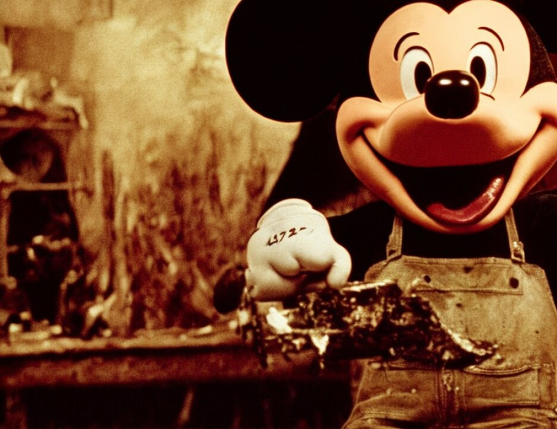

10 MR. COHN: But I think that the dwelling on the plea
11 to killing Americans requires your reiteration of your charge
12 that the plea of a coconspirator is not usable against the
13 other defendants. I think that it's called for again at this
14 time.
15 THE COURT: Again?
16 MR. COHN: I do.
17 THE COURT: All right. We'll take a three-minute
18 recess.
19 (Recess)
20 THE COURT: The jury may be brought in.
21 Ladies and gentlemen, let me just take a moment to
22 remind you of something I have already told you and will tell
23 you again in my charge with respect to the fact that a witness
24 such as the witness now on the stand has pled guilty to
25 charges arising out of circumstances related to the facts of
4819
1 this case.
2 You are to draw no conclusions or inference of any
3 kind about the guilt of the defendants on trial here from the
4 fact that a witness pled guilty to similar charges. The
5 decision of the witness to plead guilty was based on a
6 personal decision of his concerning his own guilt in light of
7 benefits afforded by the government to someone who was
8 cooperating, and so this witness's decision to plead guilty
9 may not be used by you in any way as evidence against or
10 unfavorable to the four defendants on trial here.
11 Mr. Schmidt, you may resume.
12 MR. SCHMIDT: Your Honor, at this point, I wish to
13 offer the following exhibits into evidence: WEHX-M-7X-21, the
14 original and the translation, which is the same number with a
15 T at the end.
2